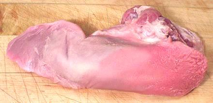

Pork Tongues

Pork tongues are eaten by pretty much every culture where pig is a
significant item in the diet. They are not nearly as fatty as cow tongues
but like them are sometimes pickled. The photo specimen was 7-3/4 inches
long and weighed 12-1/4 ounces. It cooked down to 7 ounces.
Pig tongues are particularly convenient when you are trying to do a
recipe that calls for ony a small amount of beef tongue - just don't
cook the pig tongue as long as for a beef tongue.
More on Cuts of Pork.
Buying:
Pig tongues can generally be found in ethnic
markets (except those serving primarily Jewish or Muslim communities,
of course). They are particularly common in markets serving Asian, Latin
American and Eastern European communities. They may be cut as in the
photo, or may be cut flatter with much less of the root on the underside.
Cooking:
Tongue is always cooked whole.
- Wash Tongue well and cut away any excess fat, plumbing or other
icky bits.
- Put the Tongue in a pot with water to cover and add a good doloup
of Vinegar. Use plenty of water as the tongue will curl and swell.
Bring to a boil for about 2 minutes. Remove Tongue and discard water.
- Return Tongue to the pot with fresh water. You may also put in
Onion slices, Garlic, Bay leaf and Herbs and Spices, as you desire or
as called for by your recipe.
- Bring to a boil and simmer slowly until done - 1 to 1-1/2 hours. Test
doneness with a sharp skewer though the thickest part - it should not
encounter a resistant spot in the center.
- Lift Tongue from the broth and cool just enough to handle. Peel off
the skin and return to the broth to finish cooling. Note: some pig
tongues don't peel easily - if so, leave the skin on. Some people even
leave on the much tougher skin on beef tongues.
- Some recipes call for using the broth, which needs to be strained and
defatted (using your gravy separator).
- Slice or dice the Tongue as required by your recipe.
ap_tonguez 091115 - www.clovegarden.com
©Andrew Grygus - agryg@aaxnet.com - Photos on this
page not otherwise credited © cg1
- Linking to and non-commercial use of this page is permitted.